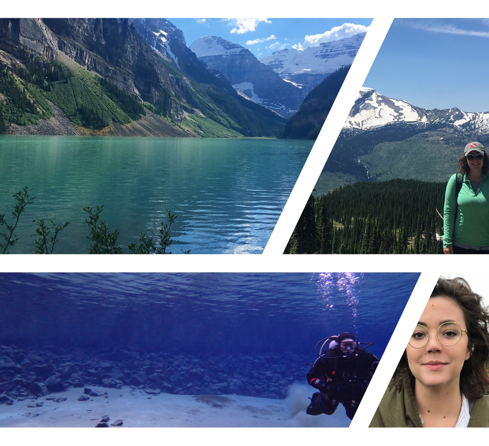
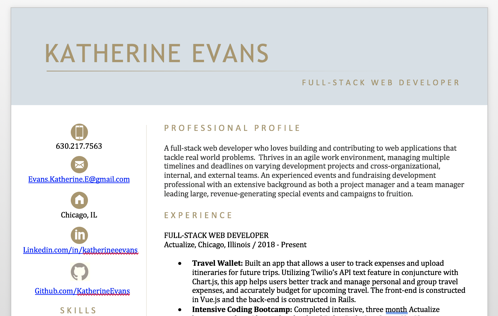
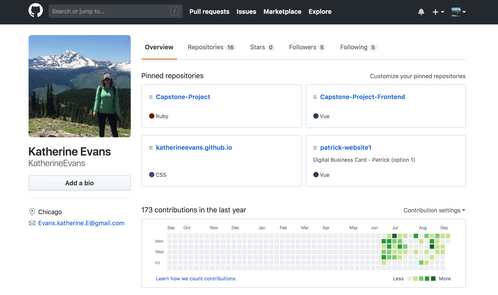

Project 1
About project 1.
Full Stack Web Developer
Perennial Student
Adventurer

A full-stack web developer who loves building and contributing to web applications that tackle real world problems. Thrives in an agile work environment, managing multiple timelines and deadlines on varying development projects and cross-organizational, internal, and external teams. An experienced events and fundraising development professional with an extensive background as both a project manager and a team manager leading large, revenue-generating special events and campaigns to fruition.
Carreer history.

Paragraph - popout of Resume pdf

Programming languages, dev tools, design skills - popout of pdf

Paragraph - link to projects in new tab